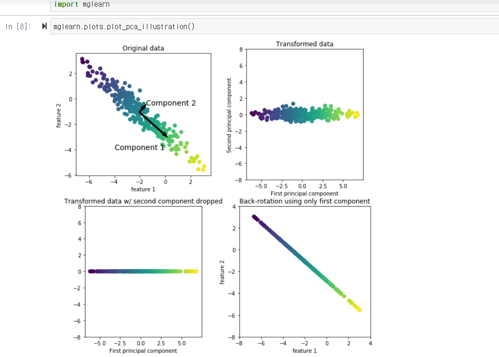

목차
- 주성분분석(Principal Component Analysis)이란?
- 주성분분석의 이해
- 주성번분석 실습
1. 주성분분석(Principal Component Analysis)이란?

주성분분석은 선택과 집중입니다. 선택과 집중이라는 말은 주어진 정보들 중 특정 정보를 선택한다는 말로, 일부 정보를 잃어버릴 수도 있다는 것을 의미합니다. 한 마디로, 주성분 분석은 여러 가지의 선택지가 있는 경우 선택지 중에 가장 중요도가 높은 선택지를 선택하는 방법론 중 하나입니다.
2. 주성분분석의 이해

정보를 잃어버릴 수도 있는데, PCA를 왜 하는 것일까요? 이는 복잡한 정보를 단순화하여 기계학습을 더욱 용이하게 하는 동시에 시각화와 데이터 압축을 용이하게 하기 위해서입니다. 경우에 따라서는 PCA를 통해 데이터를 단순화하는 것이 기계학습 모델의 정확도를 향상시키기도 합니다. 모든 정보가 통계적으로 의미있는 정보가 되지는 않고, 따라서 모든 정보를 고려하여 기계학습을 진행할 때에 발생할 수 있는 오버피팅(Over-fitting)의 문제를 해결해주기도 하기 때문입니다.
PCA는 주어진 데이터의 변수들의 관계에 집중합니다. 관계에 집중하기 때문에 데이터의 변수들, 즉 특징들의 관계를 유지하는 선에서 그래프 상에서 변수들의 위치를 이동시키기도 합니다. 아래의 그림을 볼까요?

위의 그래프에는 성분이 두 개가 있다고 할 수 있습니다. 성분 1과 성분 2의 관계가 유지되는 선에서 그래프를 회전시킬 경우, 기존데는 두 개의 축을 고려하던 그래프가 1개의 축만을 고려해도 되게 됩니다
고려할 축을 구하는 방법은 다음과 같습니다. 먼저, 성분 1을 가장 잘 설명할 수 있는 직선을 그은 다음, 직선에 수직인 선을 하나 더 긋고, 각각의 정보들을 직선에 표현했을 때 점과 직선 사이의 거리가 더 좁은 직선을 찾습니다. 위의 경우 오른쪽 하단방향으로 뻗어나가는 직선이 그렇나 직선인데요, 이를 분산이 더 큰 직선이라고도 합니다. 더 많은 정보가 직선과 가까운 거리에 있다는 말이기도 합니다. 선형대수학에서는 이러한 직선을 Eigenvector라고 하고, 이 때 데이터와 직선이 떨어진 정도를 Eigenvalue라고 합니다. 즉, 이렇게 찾아낸 직선이 그래프를 회전시켜서 단순화할 때의 축이 되고, 이 때 그래프가 변화하는 정도 또한 구할 수 있다는 말입니다.
이는 고차원의 그래프에도 적용이 가능합니다. 3차원 즉 3개의 특성을 통해 표현한 그래프는 x, y, z방향으로 분산된 데이터를 가집니다. 이 때 먼저, 하나의 데이터를 잘 표현할 수 있는 직선을 그린 뒤, 그 직선에 수직이면서 다른 정보의 특성을 잘 표현할 수 있는 직선을 그리고, 마지막으로 앞서 그린 두 직선에 수직이면서 남은 한 가지 정보를 잘 표현한 할 수 있는 직선을 그립니다. 그리고 직선 사이의 거리, 즉 분산을 구하면 분산은 각각의 데이터에 대해 1개씩, 즉 3개가 나옵니다.
여기서 저희는 선택과 집중을 합니다. 3차원 데이터, 혹은 3차원으로 표현할 수 없는, 특징이 4개 이상인 데이터를 표현하기 위해 저희는 분산이 가장 큰 데이터 2개만을 남겨두고 나머지는 고려하지 않습니다. 데이터를 표현할 수 없는 영역이 생기는 동시에, 데이터를 더욱 간단하고 직관적으로 표현할 수 있게 되기 때문입니다. 통계적으로 유의미한 정보에 주목하는 것, 그것이 PCA의 핵심입니다.
3. 주성분분석 실습
 실습 화면으로 이동하기
실습 화면으로 이동하기
블로그의 내용이 도움이 되었나요? 저에게 주신 의견을 바탕으로 더 나은 컨텐츠를 만들어갈게요:)